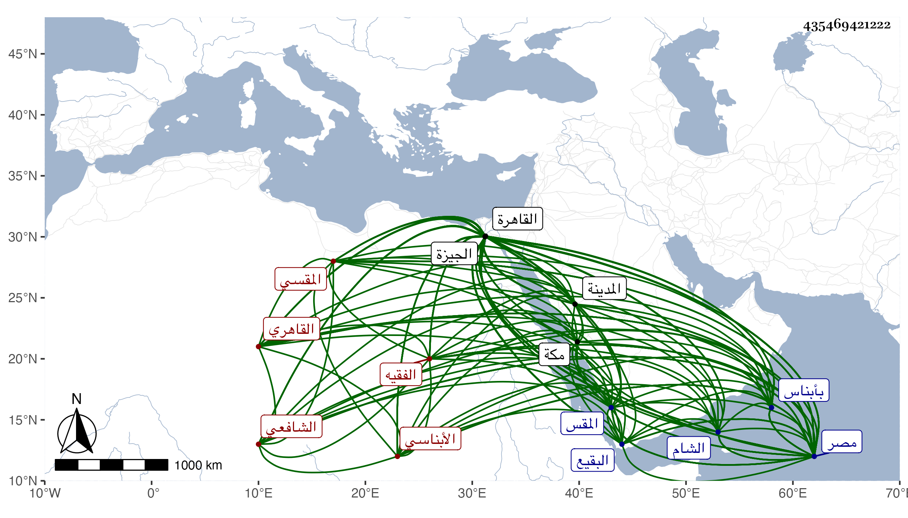

0902Sakhawi.DawLamic.ITO20230111-ara1.EIS1600.435469421222
Biography ID: 435469421222
إبراهيم بن موسى بن أيوب البرهان أبو إسحاق وأبو محمد الأبناسي ثم القاهري المقسي الشافعي الفقيه . ولد في أول سنة خمس وعشرين وسبعمائة تقريبا كما كتبه بخطه وقال مرة حين سئل عنه لا أدري يعني تحقيقا بأبناس وهي قرية صغيرة بالوجه البحري من مصر وكتبه العراقي الأبنهسي وقدم القاهرة وهو شاب فحفظ القرآن وكتبا وتفقه بالأسنوي وولي الدين الملوي المنفلوطي وغيرهما في الفقه والعربية والأصول وتخرج بالعلاء مغلطاي وسمع الحديث على الوادياشي والميدومي ومحمد بن إسماعيل الأيوبي وأبي نعيم الاسعردي والعرضي وطائفة بالقاهرة والعفيف عبد الله بن الجمال المطري وخليل بن عبد الرحمن والشهاب أحمد بن قاسم الحراري في آخرين بمكة وابن أميلة والمنبجي بالشام ومما سمعه المسلسل والبخاري وأبو داود والترمذي والنسائي والموطأ والشفا وجزءي البطاقة وأكثر ذلك بقراءته وأجازه جماعة وخرج له الولي العراقي مشيخة حدث بها وبالكتب الستة وغيرها وتقدم قديما وتصدى للإفتاء والتدريس دهرا ولبس عنه غير واحد الخرقة بلباسه لها من البدر أبي عبد الله محمد بن الشرف أبي عمران موسى و الزين مؤمن بن أبي عبد الله محمد بن الهمام و السراج أبي حفص عمر ابن أبي الحسن الدومراني بلباس كل منهم من أبيه بلباس أبي الأول من أبي عمرو عثمان بن مليك الزفتاوي وأبي الثاني من والده وأبي الثالث من أبي محمد عبد الله الغماري بلباس الثلاثة من أبي العباس البصير الذي جمع الشيخ مناقبه ودرس بمدرسة السلطان حسن وبالآثار النبوية وجامع المقسي مع الخطابة به وغيرها وولي مشيخة سعيد السعداء مدة وصرف عنها واتخذ بظاهر القاهرة في المقس زاوية فأقام بها يحسن إلى الطلبة ويجمعهم على التفقه ويرتب لهم ما يأكلون ويسعى لهم في الأرزاق حتى كان أكثر فضلاء الطلبة بالقاهرة من تلامذته ووقف بها كتبا جليلة ورتب فيها درسا وطلبة وحبس عليها رزقه ونحو ذلك وممن أخذ عنه الولي العراقي والجمال بن ظهيرة وابن الجزري وشيخنا وقال اجتمعت به قديما وكان صديق أبي ولازمته بعد التسعين وبحثت عليه في المنهاج وقرأت عليه أشياء والعز محمد بن عبد السلام المنوفي وكتب له إجازة بالتدريس طنانة كما سيأتي في ترجمته والفاسي وثنا عنه من لا أحصيه كثرة وآخر من تفقه به الشمس البشبيشي والزين الشنواني والبرهان الكلمشاوي كل ذلك مع حسن الأخلاق وجميل العشرة ومزيد التواضع والتقشف والتعبد وطرح التكلف وحسن السمت ومحبة الفقراء وتقريبهم والمناقب الجمة بحيث قل أن ترى العيون في مجموعه مثله وقد عين مدة لقضاء الديار المصرية فلما بلغه ذلك توارى وذكر أنه فتح المصحف في تلك الحالة فخرج له قال رب السجن أحب إلي مما تدعونني إليه الآية فأطبقه وتوجه إلى منية الميرج فاختفى بها أياما حتى ولي غيره فعاد وقد أشار إلى أصل ذلك القاضي تقي الدين الزبيري فإنه قال في حوادث سنة اثنتين وثمانين وسبعمائة لما أراد برقوق صرف البرهان بن جماعة عن القضاء لأنه تخيل منه أنه لا يوافقه على استبداده بالسلطنة طلب من يصلح فذكروا له جماعة منهم الأبناسي فأرسل إليه موقعه أوحد الدين وعرفه بسبب الطلب فوعده أن يحضر إليه في وقت عينه له ثم تغيب واختفى فلما لم يحضر طلب ابن أبي البقاء فاستقر به وذكره العثماني في الطبقات فقال الورع المحقق مفتي المسلمين شيخ الشيوخ بالديار المصرية ومدرس الجامع الأزهر له مصنفات يألفه الصالحون وتحبه الأكابر وفضله معروف . وقال المقريزي أنه صنف في الفقه والحديث والنحو وكان أبر مشايخ مصر بالطلبة طارحا للتكلف مقبلا على شأنه وللناس فيه اعتقاد ووهم فزاد في نسبه بين اسمه واسم أبيه الحسن . وقد حج كثيرا وجاور مرة وحدث هناك وأقرأ ثم رجع فمات في الطريق في يوم الأربعاء ثامن المحرم سنة اثنتين بمنزلة كفافه فحمل إلى المويلحة فغسل وكفن وصلى عليه في يوم تاسوعاء ثم حمل إلى عيون القصب فدفن بها وقبره بها يتبرك به الحجيج وعملت له قبة . قلت قد زرته وأصل القبة لبهادر الجمالي الناصري أمير الحج كما قرأته على لوح قبره وأنه مات في رجوعه من الحج في ذي الحجة سنة ست وثلاثين وسبعمائة وهو موافق لما ذكر في ترجمته وقبل الدخول إليها مكان آخر وأظنه محل دفن الشيخ ولا قبة تعلوه . ورثاه الزين العراقي بأبيات دالية وكان صديقا له وهو الذي سعى لولده الولي في غالب ما حصل له من الوظائف . ومن تصانيفه الشذى الفياح في مختصر ابن الصلاح شحنه بزوائد من نكت العراقي وشرحه للألفية وغير ذلك وشرحا لألفية ابن مالك ومناقب الشيخ أبي العباس البصير وحكى الشهاب أحمد بن محمد بن عبد الله الأسلمي نزيل الجيزة وأحد فضلائها وصلحائها وهو من تلامذته أنه سمعه يقول للبلقيني أنه سمع كلام الموتى في قبورهم وأنه كان في البقيع من المدينة فوقف عند قبر جديد ليسأل عن صاحبه فقال له شخص كان يقرأ عليه من قبر يا سيدي لم تقف عند قبر هذه الرافضية قال فرأيت البلقيني احمر وجهه ونزلت دموعه وقال آمنت بذلك وناهيك بهذه القصة في جلالة البرهان وبلغني أيضا أنه كان ربما يتردد لابن المقسي لما يرى منه من مزيد الإحسان للزاوية وأهلها بل هو الآخذ له مشيخة سعيد السعداء فبينما هو في بعض الأيام داخل عليه إذ سمعه يخاطب آخر بقوله اخلع هذه العمامة والبس عمامة بيضاء وادخل في دينهم وتحكم فيهم أو كما قال وأنه دخل فوجد المقول له هذا نصرانيا فانزعج ومن ثم لم يصل إليه . وحكى لي الشريف الشهاب أحمد بن محمد بن عبد الله بن عبد المنعم الجرواني . أنه كان عنده فجاءته فتيا فكتب عليها ثم بعد أن أخذها السائل تبين له الخطأ فيها فأرسل من يدركه فما أمكن فتألم لذلك فما مضى ألا اليسير وجاء السائل وأخبر بأن الورقة سقطت منه في البحر فحمد الشيخ الله وسر ثم كتب له الجواب . وكذا حكى لي العز السنباطي عن شيخه الشمس البوصيري أن الأبناسي خرج في بعض ليالي طاعون سنة تسع وأربعين وسبعمائة من سكنه بالمدرسة الشرابيشية بالقرب من جامع الأقمر ليستضيء فما وجد من يقد منه إلا في الدرب الأحمر لاستيلاء الطاعون على الناس . وهو عند المقريزي في تاريخ مصر مع غلط فيه كما قدمنا وفي العقود باختصار .
